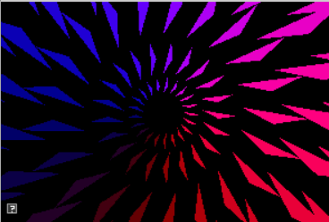
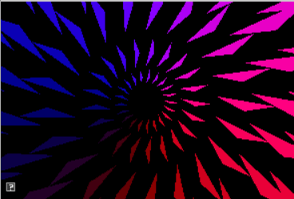

The goals of this lab are to
This assignment has been added to your AnimationToolkit repository.
> cd cs56 > cd AnimationToolkit > cd build > cmake .. > make > ../bin/a4-teapots
You should now have a new directory under assignments called a4-euler.
In this assignment, you will implement conversions between euler angles and matrices. To help test your conversions, you have been given a grid of spinning teapots as well as a console program for unit testing.
In the teapot viewer, you should see a grid of teapots. The UI on the top
left allows you to enter test values. Each teapot tests a conversion
function. This week, you will implement 6 of the teapots to match the top
right. Next week, you will implement the remaining two teapots.
Your basecode this week includes a Jupyter notebook which uses the SymPy python library to compute symbolic expressions for all 6 euler angle matrices. In class, we talked about how to go between ZYX euler angles and a matrix. Let's check our understanding of this process here.
Aside: Running the Jupyter Notebook You do not need to run the Jupyter notebook for your assignment this week. Instead, use the compiled output here. However, if you would like the run it, you can download it from here. To run, execute the following from the command line. This will open a page in your browser that will allow you to edit the notebook.
>jupyter notebook
Euler angles describe rotations as a sequence of rotations around each axis. Any sequence is valid: we can rotate first around X, then Y, then Z; or we can rotate first around Y, then X, and then Z.
In our notebook, we define rotation matrices for each of these rotations like so
# Define symbols
cx,sx = symbols('cx sx')
cy,sy = symbols('cy sy')
cz,sz = symbols('cz sz')
Rx = Matrix([
[1, 0, 0],
[0, cx,-sx],
[0, sx, cx]])
Ry = Matrix([
[ cy, 0, sy],
[ 0, 1, 0],
[-sy, 0, cy]])
Rz = Matrix([
[cz, -sz, 0],
[sz, cz, 0],
[0, 0, 1]])
Once we have each rotation matrix, we can compute the matrix corresponding to XYZ euler angles like so.
print("Rxyz")
pprint(Rx * Ry * Rz)
Rxyz
| cy⋅cz -cy⋅sz sy |
| |
|cx⋅sz + cz⋅sx⋅sy cx⋅cz - sx⋅sy⋅sz -cy⋅sx|
| |
|-cx⋅cz⋅sy + sx⋅sz cx⋅sy⋅sz + cz⋅sx cx⋅cy |
Let's take a look at this matrix and answers several questions about it. Please put the answers to the following questions in your readme for this week.
Q1: What is an orthogonal matrix? Show that
If you have shown that more columns have unit length or are perpendicular to the other two, you will receive extra credit.
Q2: What matrix element would be the easiest to get an angle back?
Q3: Recall that tan = sin/cos. How could we use this to get the other angles back?
Q4: What happens when the rotation around the Y axis is 90 degrees?
Q5: If the Y rotation is 90 degrees, how can we get the X and Z values back?
Q6: Show that when the rotation around Y is 90 degrees, the values for X and Z are not unique.
Q7: Consider the following matrix. What does each column represent?
|0 -cx⋅sz + cz⋅sx cx⋅cz + sx⋅sz| |0 cx⋅cz + sx⋅sz cx⋅sz - cz⋅sx| |-1 0 0 |
Q8: Consider the following matrix. Suppose we want to use this matrix to convert a character's local axes to world coordinates. How do we do this?
|0 -cx⋅sz + cz⋅sx cx⋅cz + sx⋅sz| |0 cx⋅cz + sx⋅sz cx⋅sz - cz⋅sx| |-1 0 0 |
Q9: Suppose we tried to extract euler angles from a matrix that was not orthogonal. What are some problems we would encounter?
Q10: What is the inverse of the rotation matrix corresponding to XYZ euler angles, in
terms of Rx, Ry, and Rz matrices?
To start, implement the function AMatrix3::fromEulerAnglesZYX(). You can find this function in libsrc/animation/AMatrix3-basecode.cpp. This function takes a parameter called angleRad which stores euler angles as a 3-tuple
To implement this function, you can take two approaches
AMatrix3 supports two types of syntax for accessing elements: indexing or by element name. For example,
std::cout << mM[0][0] << std::endl; // indexing notation std::cout << m11 << std::endl; // lecture matrix notation mM[row][col] = 0.4; m11 = 3;
To run the unit tests from the build directory, type
build> ../bin/a4-testEuler
Using the formulations from notebook, extract the X, Y, and Z angles from the matrix. In your implementation, be carefull of edge cases around 90 degrees!
To run the teapots from the build directory, type
build> ../bin/a4-teapots
To run the unit tests from the build directory, type
build> ../bin/a4-testEuler
Option 1 Write unit tests to check your conversions (0.1 per unique test. A unique test should execute a different control path in each function). A simple test application could look like the following. Try to test edge cases too! Extend your CMakeLists.txt file to create a new test application. All you test code should be stored in assignments/a1-a2-rotations
void RunTest()
{
// create a matrix from euler angles
AMatrix3 m, m1;
m.fromEulerAngles(angles); // note: you will need to set angles
// convert from the matrix back to euler angles
AVector3 test = m.toEulerAngles();
// convert back to matrix again
m1.fromEulerAngles(test);
// Check whether m == m1 and print the result
}
void main(int argc, char** argv)
{
RunTest();
}
Option 2 Now that your framework supports euler rotations, you can make new types of interesting demos! As in the last assignment, create an interesting 2D demo that rotates objects.
Option 3 Show that all the columns in Q1 have unit length and are orthogonal (1/3 each)
